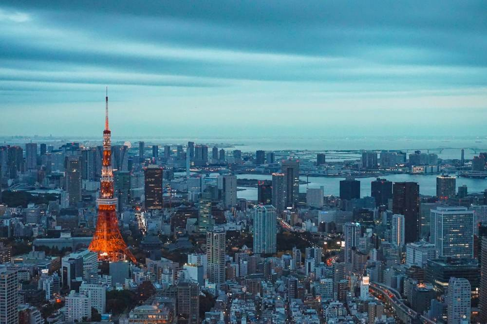

Визначні пам’ятки
Серед знакових місць — храм Сенсо-дзі в Асакусі, перехрестя Сібуя, парк Уено, Токійська вежа та оглядові майданчики. Зручніше обирати один-два райони на день і користуватися громадським транспортом.
Кухня та гастрономія
Рамен, суші, темпура та солодощі з матча — лише початок знайомства з кухнею. Невеликі заклади часто спеціалізуються на одній страві, а сезонні продукти відображають японський календар.
Культура і традиції
У Токіо бережно ставляться до порядку в громадських місцях, черг і тиші в транспорті. Традиційні свята, сади та храми співіснують із сучасною музикою, модою й технологіями.
Особистий погляд
Мене захоплює думка про Токіо як місто дрібних спостережень: вивіска, сад за брамою, тиша храмового подвір’я. Для першої мандрівки я б чергував людні квартали зі спокійними прогулянками.
Туристичний нарис, не звіт про здійснену поїздку
Продовжити маршрут
Порівняйте міста у фотогалереї або поверніться до загального списку напрямків.
До фотогалереї → Інші міста